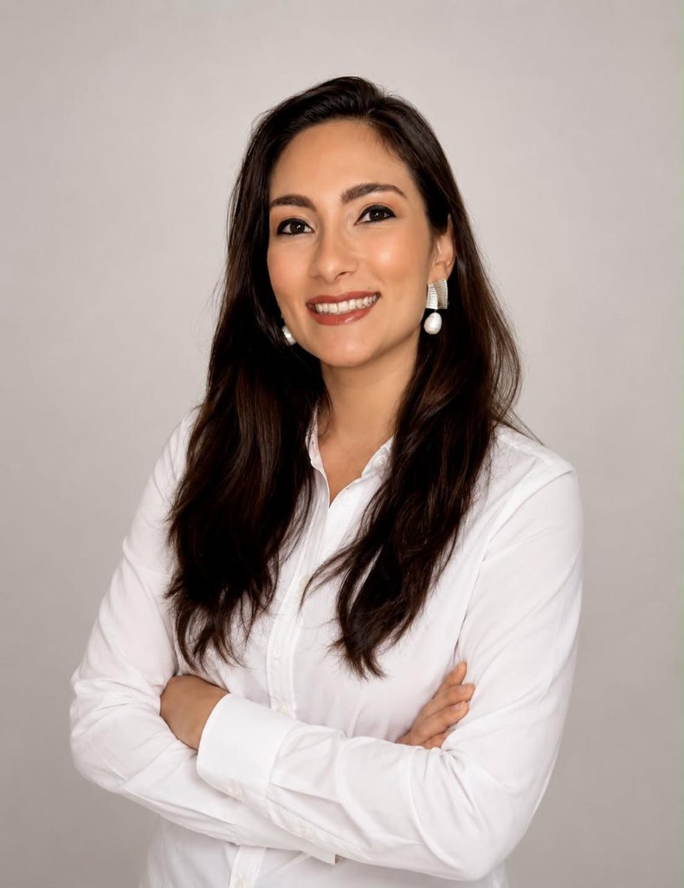

Estomatologista em Londrina — Cirurgia Oral Menor, Diagnóstico de Lesões Bucais e Odontologia Oncológica
Dra. Nathalia Bigelli Del Neri e Zanelato é cirurgiã-dentista e estomatologista em Londrina/PR, com Graduação e Mestrado pela FOB/USP e 20 anos de atuação clínica, cirúrgica e docente. Professora na UniCesumar e coordenadora de pós-graduação na HODOS.
Sem espera em call center: fale direto pelo WhatsApp e receba orientações completas sobre local e preparo.

Filosofia de Atendimento Humanizado e Transparente
"Tratar lesões bucais ou realizar intervenções cirúrgicas exige técnica perfeita, mas exige sobretudo empatia. Cada paciente traz angústias que devem ser acolhidas com explicações claras, ausência de dor e acompanhamento atencioso em todas as etapas."
— Dra. Nathalia Bigelli Del Neri e Zanelato
Estomatologista em Londrina/PR: diagnóstico preciso e cirurgia oral com respaldo acadêmico USP
A Dra. Nathalia Bigelli Del Neri e Zanelato atua como estomatologista em Londrina, referência regional em investigação de lesões da boca, cirurgia oral menor e suporte odontológico a pacientes oncológicos. Com formação completa na Faculdade de Odontologia de Bauru da USP (graduação, especialização e mestrado), une rigor científico e acolhimento humano em cada consulta.
Pacientes que buscam estomatologia em Londrina encontram atendimento para manchas na boca, aftas que não cicatrizam, biópsias orais, remoção de sisos inclusos, fotobiomodulação a laser (laserterapia) para mucosite e procedimentos cirúrgicos de consultório. O agendamento é feito pelo WhatsApp, com confirmação de local e horário antes de cada atendimento na região de Londrina/PR.
Colegas dentistas e médicos oncologistas também podem encaminhar casos complexos para diagnóstico e laudos detalhados e devolução ética do paciente ao profissional de origem — diferencial para quem busca uma estomatologista de confiança no Paraná.
Tratamentos odontológicos especializados em Londrina/PR
Procedimentos de estomatologia, cirurgia oral menor e laserterapia conduzidos com precisão técnica e acompanhamento próximo em cada etapa.
Remoção de Sisos e Dentes Inclusos
Cirurgia de siso em Londrina/PR com planejamento cirúrgico preciso, técnica minimamente invasiva e uso de fotobiomodulação a laser para uma recuperação otimizada.
Diagnóstico e Tratamento de Lesões (Estomatologia)
Estomatologia clínica em Londrina: investigação e tratamento de manchas, aftas recorrentes, caroços, cistos e feridas na boca que não cicatrizam.
Odontologia Oncológica
Prevenção e tratamento da mucosite e demais complicações orais decorrentes de radioterapia e quimioterapia, em suporte ao tratamento oncológico.
Fotobiomodulação (Laserterapia)
Tecnologia a laser de baixa potência para acelerar a cicatrização, promover analgesia imediata e reduzir a inflamação em diversos quadros clínicos.
Biópsias da Cavidade Oral
Biópsia oral em Londrina/PR: procedimentos diagnósticos ágeis com envio para análise histopatológica especializada.
Cirurgias Orais
Cirurgia para tracionamento ortodôntico, frenectomias e remoção de cistos, realizadas com anestesia local e técnicas minimamente invasivas.
Sedação Odontológica: mediante avaliação prévia, alguns procedimentos cirúrgicos podem ser realizados com sedação, proporcionando ainda mais conforto e tranquilidade durante o atendimento.
Trajetória construída na USP, hoje formando novos cirurgiões em Londrina
Formação Acadêmica — FOB/USP (Bauru/SP)
-
Graduação em Odontologia
Faculdade de Odontologia de Bauru — Universidade de São Paulo (FOB/USP)
-
Especialização em Cirurgia Oral Menor
FOB/USP (Bauru/SP)
-
Mestrado em Estomatologia
FOB/USP (Bauru/SP)
Atuação Docente — Londrina/PR (atual)
Coordenadora do Curso de Aperfeiçoamento em Cirurgia Oral Menor
HODOS Pós-Graduação (Londrina/PR)
Docente de Cirurgia Oral e Estomatologia
UniCesumar (Londrina/PR)
20 anos de atuação
Focados exclusivamente na área cirúrgica e diagnóstica, unindo prática clínica e formação de novos profissionais.
Parceria Ética e Encaminhamento de Pacientes
Um protocolo transparente para casos de cirurgia oral menor, lesões suspeitas e suporte estomatológico oncológico — pensado para dar segurança a você e ao seu paciente.
-
✓
Suporte especializado em estomatologia e laserterapia para pacientes em tratamento oncológico.
-
✓
Laudos histopatológicos e relatórios cirúrgicos detalhados, para acompanhamento clínico integrado.
-
✓
Compromisso ético inegociável de devolução do paciente ao cirurgião-dentista ou médico indicador após a conclusão do procedimento.
"O objetivo é ampliar as possibilidades de cuidado do seu paciente, sem substituir o vínculo com o profissional de origem."
Dra. Nathalia Bigelli Del Neri e Zanelato
Mestre em Estomatologia — FOB/USP
Perguntas Frequentes
A Dra. Nathalia Bigelli Del Neri e Zanelato é estomatologista em Londrina/PR, Mestre em Estomatologia pela FOB/USP, com 20 anos de experiência em diagnóstico de lesões bucais, cirurgia oral menor, laserterapia e odontologia oncológica. O agendamento é feito pelo WhatsApp (+55 43 9170-7611), com local e horário confirmados antes de cada consulta.
O estomatologista é o especialista em diagnóstico e tratamento de doenças da cavidade oral: manchas, aftas persistentes, feridas que não cicatrizam, lesões suspeitas e biópsias. Também atua em complicações bucais de tratamentos oncológicos e em procedimentos cirúrgicos orais de menor complexidade.
A mucosite é uma inflamação das mucosas da boca, comum em pacientes que fazem radioterapia e quimioterapia, causando dor, dificuldade para comer e falar. A laserterapia (fotobiomodulação) atua reduzindo a inflamação, aliviando a dor e acelerando a cicatrização das lesões, contribuindo para mais conforto durante o tratamento oncológico.
Feridas, manchas ou caroços na boca que persistem por mais de 15 dias, que sangram, mudam de cor ou tamanho, merecem avaliação especializada. A biópsia é indicada sempre que houver dúvida diagnóstica clínica, permitindo confirmar a natureza da lesão por meio de análise histopatológica e definir a conduta mais adequada.
A recuperação varia conforme a complexidade do caso, mas costuma envolver inchaço leve a moderado nos primeiros dias, com melhora progressiva. O uso de laserterapia no pós-operatório ajuda a reduzir dor e inflamação, acelerando a cicatrização. Todas as orientações de cuidados e retorno são explicadas em detalhes antes e depois do procedimento.
Sim. O atendimento é focado na etapa cirúrgica ou diagnóstica para a qual você foi encaminhado. Ao final do procedimento, você recebe relatório detalhado e é devolvido ao seu cirurgião-dentista de confiança, que continua conduzindo o restante do seu tratamento.
Entre em contato pelo WhatsApp (+55 43 9170-7611). No agendamento, você recebe confirmação de data, horário, local do atendimento em Londrina/PR e orientações de preparo para consulta ou procedimento.
Pronto para cuidar da sua saúde bucal com quem entende do assunto?
Fale agora pelo WhatsApp e agende sua avaliação. Local e horário são confirmados no momento do agendamento.
Agendar Consulta via WhatsApp